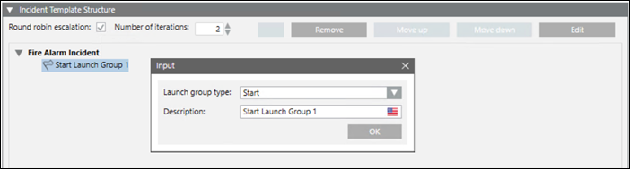

Launch Groups
This section describes the procedures to configure a launch group.
Create a Launch Group
- At least one incident template is created.
- Select Applications > Notification > Incident Templates > [incident template].
- Select the Incident Editor tab.
- Open the Incident Template Structure expander.
- Click Add to add a launch group to the incident template.
- By default, the Start launch group is created.
- Double-click the launch group to change its group type.
- The Input message box displays.
- In the Description field, edit the name of the launch group.
- (Optional) From the Launch Group Type drop-down list, select either of the following options to set a different launch group type:
– All Clear
– Escalation
– Manual
– Start - Click OK.
- The launch group is created.


NOTE 1:
Only one Start launch group and All Clear launch group can be created for an incident template.
NOTE 2:
When an incident template is triggered by an event, all notification templates contained in the Start launch group are automatically launched.
For incidents initiated by operators, the launch incident wizard preselects all notification templates from the Start launch group. The operator can then manually customize which notification templates will be launched.
Associate a Notification Template with a Launch Group
- You have created the launch group with which you want to associate the notification template.
- Select Applications > Notification > Incident Templates> [incident template].
- Click the Incident Editor tab and open the Incident Template Structure expander.
- The incident template along with the launch groups display.
- Navigate to Applications > Notification > Notification Templates in System Browser, and drag a notification template onto a launch group.
- The notification template is associated with the launch group and displays below the group.
NOTE: You can re-arrange notifications within the same launch group or move them to different launch groups using Move up and Move down. To drag and drop a notification inside a Launch Group is disabled in Windows App client.
- Click Save
 .
.
Assign a Notification Template for Escalation
- One or more notification templates are assigned to the Escalation launch group.
- Select Applications > Notification > Incident Templates.
- Select the incident template.
- The Incident Editor tab displays.
- Open the Incident Template Structure expander.
- Select the notification template.
- Click Edit.
- The Notification Editor tab displays.
- Open the Control Options expander.
- Select the Enable escalation check box.
- Select the notification template for escalation from the Notification template drop-down list.
NOTE: A warning message box displays, if the Enable escalation check box is selected and a notification template is not assigned for escalation in the Notification template field. - Click Save
 .
.
- The corresponding notification template is assigned for escalation.
Drag-and-drop of notifications for escalation is disabled in Windows App client.
Update a Launch Group
- One or more incident templates are configured.
- Select Applications > Notification > Incident Templates.
- Select the incident template to be updated.
- The Incident Editor tab displays.
- Open the Incident Template Structure expander.
- Perform any of the following steps:
- To add a launch group, click Add.
- To remove a launch group, select the required launch group and click Remove.
To remove a launch group or notification is disabled in Windows App client.
- To re-arrange notifications within the same launch group or move them to different launch groups, select the notification and thereafter, click Move up or Move down. Drag the corresponding notification template within the same launch group or across different launch groups assigned to a corresponding incident template.
- To edit the settings of a notification template associated with a launch group, select the notification template and click Edit. (See Configure the Message in Creating and Configuring Notification Template).
- Click Save
 .
.
- The incident template is updated.